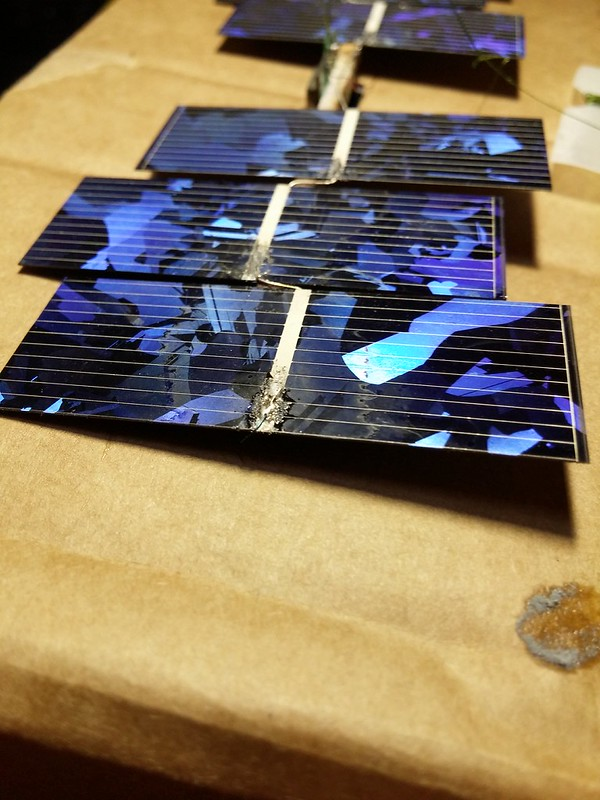

ICSPACE23 launch
from the archive
ICSPACE23 was launched at 12:00h UTC on 17/12/2020 from Felixstowe, UK. It is once again a LoRaWAN tracker connected to The Things Network.
Day 1
Here is the launch video, filmed by Steve Randall. Many thanks to Steve for launching it.
At the end of the day, the balloon reached the Netherlands. It is at 10785m, the highest altitude so far for an ICSS balloon.
We have a transmission distance record: 701km. Three packets were picked up by a gateway over the Matterhorn. The balloon was at lat=51.870953,lon=4.089384,alt=10538 while the gateway was at "latitude": 45.97645,"longitude": 7.65849,"altitude": 4478. No doubt, the high altitude position of the gateway helps!
Hopefully this page will be updated as the balloon carries on around the world.
Day 2
The balloon woke up over Belarus. Transmissions were picked up from neighbouring Lithuania. It floated at 10600m throughout the day, down from yesterday’s peak of 10700m+.
Flight predictions show that it may miss Japan.
After reviewing the log of past positions sent down, the very first position fix of the day was at an astonishing 1.32° sun elevation. At this incident angle, the sun’s power would have been just 2% of the power if it was directly shining head on at the solar cells. The position was Lon=22.393309,Lat=53.338936,alt=10650,ts=2020-12-18 06:58:01. Note that longitude and latitude positions are accurate to 0.0065335 degrees, altitude accurate to the meter and time accurate to the minute. The tracker saves the very first position fix of the day to EEPROM. It may have browned out trying to transmit it over radio but it saved it anyway.
Keying the position and time into SunCalc, this is how it looks:
Key information
The key stats for the balloon are as follows:
Tracker weight: 5.68 grams
Free lift: 6.0 grams
Lifting gas: Hydrogen(99.9% pure)
Balloon: Aliexpress clear 36 inch balloon
Radio: LoRa, using the LoRaWAN protocol, registered on The Things Network
Flight Duration: Not available yet
Float Altitude: As of 17/12/2020, reached a peak of 10785
Balloon Preparation: Balloon was prestretched to 0.630psi and sealed(temporarily). A hair dryer was used to heat the surface of the film during inflation. It took 40 minutes to reach peak internal pressure with and full power on aquarium pump.
Photos of Tracker
These photos were taken by Steve Randall, a day before launch. Many thanks Steve.
